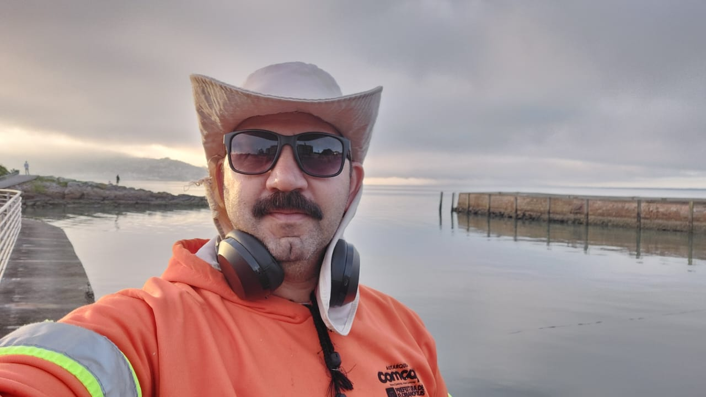

Dados Pessoais
Nome: Antonio Marcos Mello
E-mail: antonio.mello@aluno.fmpsc.edu.br
Telefone: (48) 984776749
https://www.google.com.br/https://www.jw.org/pt-pt/
Experiência Profissional
Cargo: Gari de coleta.
Empresa: COMCAP
Descrição: Recolher o lixo, limpeza, manutenção e conservação de espaços publicos..
Formação Acadêmica
Curso: ADS
Instituição: FMP
Ano de Conclusão: Cursando